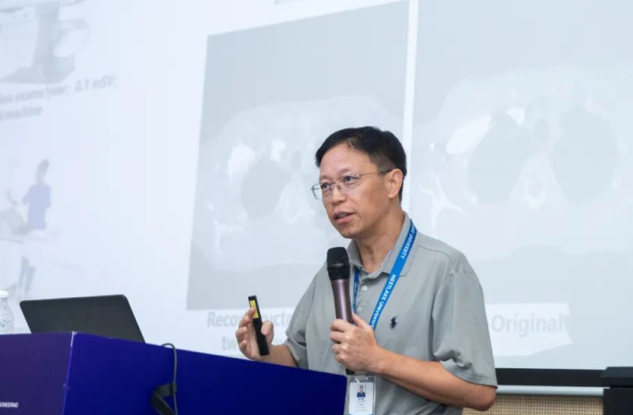

Yefeng Zheng, a prominent scientist at Tencent, joined Westlake University full-time to focus on Medical Artificial Intelligence
2024-08-15
On the last day of July 2024, 48-year-old Zheng Yefeng stood on the podium of a university classroom for the first time as a professor.
This was the third day of the inaugural West Lake University Artificial Intelligence Summer Public Course. As one of the morning's main speakers, dressed in a gray polo shirt and casual canvas shoes, Zheng Yefeng arrived early at the venue, took over from Professor Cheng Tao from University College London, opened his PPT on the big screen, and quietly waited for the clock to strike the hour of the class.
On the last working day of the previous week, he had just completed his resignation procedures in Shenzhen, bidding a hasty farewell to his "old employer" Tencent, where he had spent six years. He put a period to his identity as a "Tencent Distinguished Scientist and Director of the Tianyan Lab," and also said goodbye to his nearly 20-year career in the industry across China and the United States.
Joining West Lake University full-time, Zheng Yefeng, an IEEE Fellow, AIMBE Fellow, and a scientist in medical artificial intelligence, was appointed as a professor in the School of Engineering and will establish a Medical Artificial Intelligence Laboratory here.
A well-known figure in the industry, Zheng Yefeng is set to start anew from West Lake as a "newcomer" in academia.
On the last day of July 2024, 48-year-old Zheng Yefeng stood on the podium of a university classroom for the first time as a professor.
This was the third day of the inaugural West Lake University Artificial Intelligence Summer Public Course. As one of the morning's main speakers, dressed in a gray polo shirt and casual canvas shoes, Zheng Yefeng arrived early at the venue, took over from Professor Cheng Tao from University College London, opened his PPT on the big screen, and quietly waited for the clock to strike the hour of the class.
On the last working day of the previous week, he had just completed his resignation procedures in Shenzhen, bidding a hasty farewell to his "old employer" Tencent, where he had spent six years. He put a period to his identity as a "Tencent Distinguished Scientist and Director of the Tianyan Lab," and also said goodbye to his nearly 20-year career in the industry across China and the United States.
Joining West Lake University full-time, Zheng Yefeng, an IEEE Fellow, AIMBE Fellow, and a scientist in medical artificial intelligence, was appointed as a professor in the School of Engineering and will establish a Medical Artificial Intelligence Laboratory here.
A well-known figure in the industry, Zheng Yefeng is set to start anew from West Lake as a "newcomer" in academia.